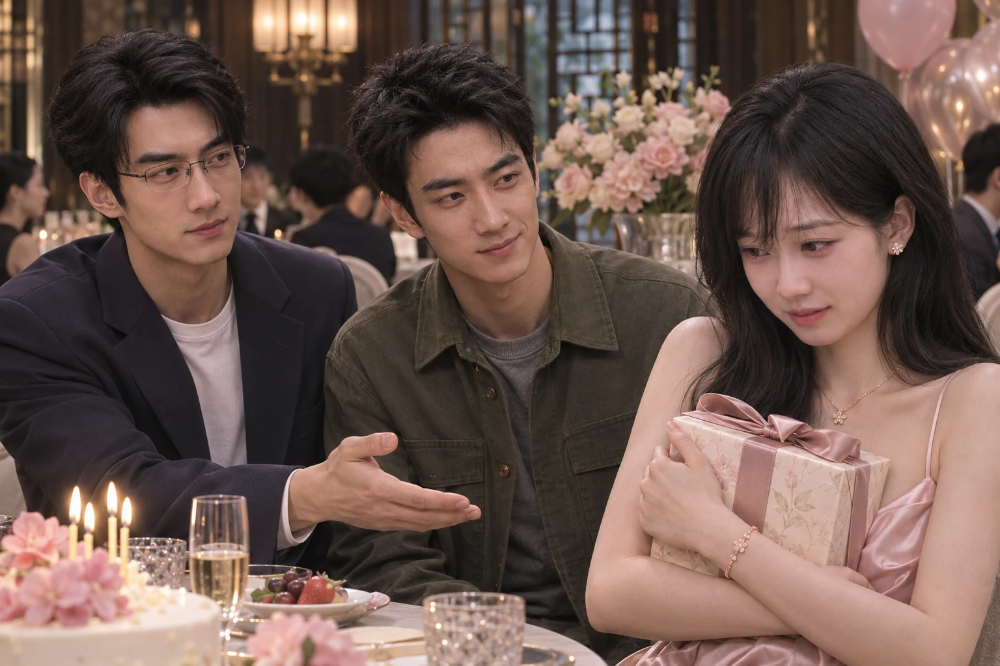
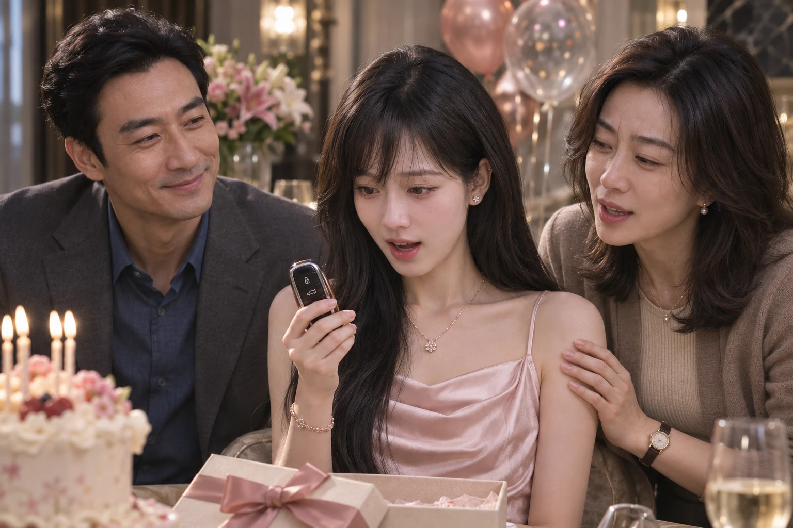
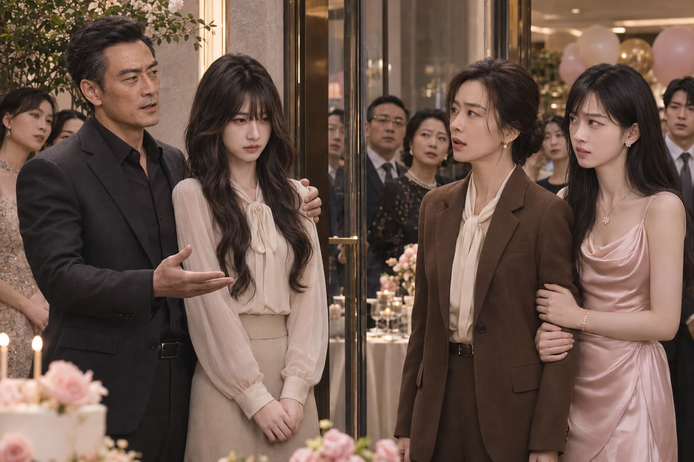
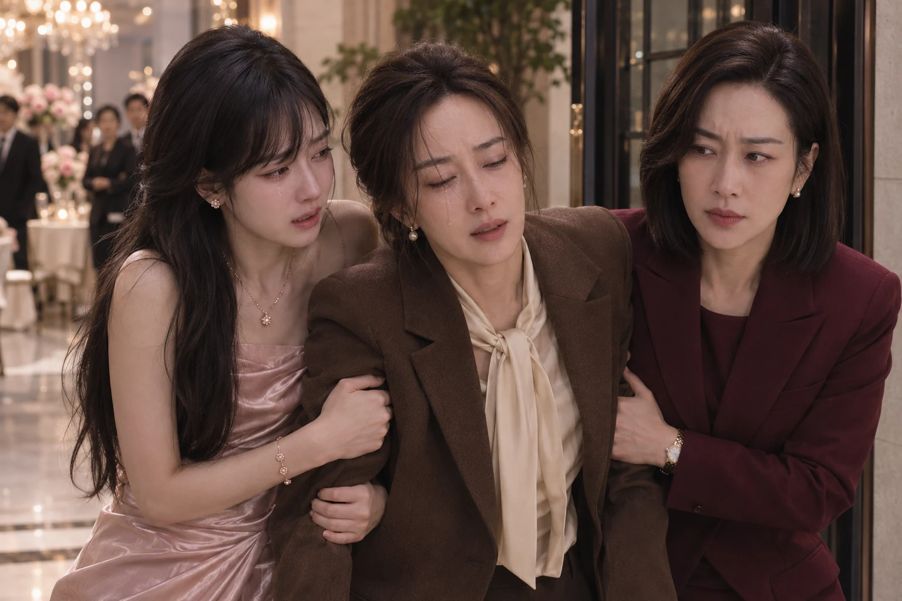

ตอนที่ 03
เหยียบหัวใจ
“วันนี้พี่สามสวยมากเลย” ซ่งจื้อกอดแขนพี่สาว เอ่ยชมไม่ขาดปาก
“อาจื้อสูงขึ้นอีกแล้วเหรอเนี่ย” ซ่งอวิ๋นแหงนคอมองลูกพี่ลูกน้องจนคอตั้งบ่า
ไม่อยากเชื่อเลยว่าเจ้าลูกหมาที่น่ารักตรงหน้าเธอคนนี้ จะถูกนางเอกปั่นหัวง่าย ๆ พวกเราเคยสนิทสนมกันขนาดนั้นแท้ ๆ แต่เขาดันถูกดึงไปเป็นพวก ยังหันมาต่อว่าและทำร้ายเธอโดยไม่รู้ตัว ยิ่งคิดยิ่งปวดใจ
“จริงเหรอครับ พ่อก็บอกว่าผมสูงขึ้นเหมือนกัน” เด็กหนุ่มยิ้มกว้าง “ว่าไปแล้วป้าสะใภ้ก็ยังสวยเหมือนตอนผมเด็ก ๆ เลยครับ”
“แหม เจ้าเด็กปากหวาน” โจวจิ่วกลั้นยิ้มจนปวดแก้ม ซ่งจื้อเป็นความสดใสของครอบครัว ไม่ต้องบอกเลยว่าตั้งแต่เล็กจนโต เขาน่าเอ็นดูขนาดไหน
“ไปที่โต๊ะกันเถอะครับ ถ้าช้ากว่านี้แม่บิดหูผมแน่เลย” ซ่งจื้อยิ้มแห้ง ๆ เมื่อเห็นไปเห็นมารดาถลึงตาใส่จากโต๊ะประธาน
“อื้ม ไปสิ” ซ่งอวิ๋นเดินเคียงคู่ไปกับน้องชายและมารดา ระหว่างทางสบตาผู้ใหญ่เธอก็ค้อมคำนับ ทำความเคารพแขกเหรื่อด้วยความนอบน้อม อย่างเด็กสาวที่ถูกสั่งสอนมาเป็นอย่างดี
“สุขสันต์วันเกิดนะลูกเสี่ยวอวิ๋น ไหนมาให้อาดูใกล้ ๆ หน่อย โตเป็นสาวสวยแล้วสิเนี่ย” ทันทีที่หลานสาวเดินมาถึงโต๊ะตัวใหญ่ ซ่งเซียงจับแขนหลานสาว ดวงตาเต็มไปด้วยความเอื้อเอ็นดูเต็มเปี่ยม
“หนูสวยเหมือนอาไหมคะ” ซ่งอวิ๋นหมุนตัวหนึ่งครั้ง ไม่วายเอ่ยประจบ
“แน่นอน สาว ๆ บ้านนี้สวยมาก ถ้าบอกว่าตัวเองเป็นอันดับสอง ไม่มีใครกล้าพูดว่าเป็นอันดับหนึ่งแน่ ๆ” ซ่งเซียงหัวเราะ เอ่ยเย้ากลับไป พลางสวมสร้อยเพชรราคาแพงหูฉี่ไว้บนข้อมือหลานสาว
คำพูดของเธอไม่เกินจริงเลยสักนิด สมัยเธอยังเป็นสาว ๆ ใครก็บอกว่าในบรรดาตระกูลเศรษฐีผู้มั่งคั่ง ไม่มีใครสวยไปกว่าเธอ ตอนเธอแต่งงานยังทำหนุ่ม ๆ เสียใจกันเป็นทิวแถว
“ว้าว อารองเสียเงินไปเท่าไหร่คะเนี่ย ดูแล้วคงแพงมาก ๆ” ซ่งอวิ๋นเบิกตากว้าง สร้อยเพชรบนข้อมูลเธอสะท้อนแสงไฟระยิบระยับ มองผ่าน ๆ ยังรู้เลยว่างานละเอียดขนาดไหน
“วางใจเถอะ ขนหน้าแข้งอาไม่ร่วงหรอก” ซ่งเซียงโบกมือปัดเบา ๆ มันไม่ใช่เรื่องใหญ่โตอะไร
“น้องสาม.. อันนี้เป็นของขวัญจากพี่กับเจ้ารอง” เจียงซูกล่าวเสียงนุ่ม นำกล่องของขวัญขนาดกลางมอบให้น้องสาว
“เดี๋ยวค่อยแกะก็ได้นะครับ” เจียงเซินเอ่ยสำทับ
“ขอบคุณค่ะพี่ใหญ่ พี่รอง” เธอกอดของขวัญไว้อย่างหวงแหน แม้เขาจะเป็นพี่ชายต่างแซ่ แต่เธอยังเรียกพวกเขาว่าพี่ใหญ่และพี่รองอย่างเต็มปาก

นี่อาจเป็นช่วงเวลาสุดท้ายที่พี่ชายยังดีกับเธออยู่ ไม่ได้ถูกพี่สาวนอกสมรสดึงตัวไปเป็นพวก ดังนั้นเธอจะรักษาช่วงเวลาสุดท้ายนี้ไว้ให้ดีที่สุด
“ส่วนของขวัญของผม ให้พี่สามไปแล้วนะ” ซ่งจื้อยื่นหน้าเข้าไปเอ่ยขัดบทสนทนา รอยยิ้มทะเล้นแต่งแต้มใบหน้าหล่อใสตามวัย ก่อนจะชี้กิ๊บติดผมบนศีรษะพี่สาว
“เอ๊ะ? เอามาติดให้พี่ตั้งแต่เมื่อไหร่เนี่ย” ร่างอ้อนแอ้นดึงกิ๊บออกจากศีรษะ มันเป็นกิ๊บรูปดาวสีพาสเทลน่ารัก
“เซอร์ไพรซ์ใช่ไหมครับ”
“อื้อ”
“ไป ๆ หลบไปได้แล้วอาจื้อ” ซ่งเซวียนดันหลังลูกชายให้พ่นทาง ก่อนยัดบางอย่างใส่มือหลานสาว
ซ่งอวิ๋นก้มมองสิ่งที่อยู่ในมือ ความประหลาดใจแล่นวาบอยู่ในดวงตาดอกท้อคู่สวย “เบนซ์เหรอคะ”
“ใช่ Mercedes-AMG GT 63 ตอนนี้หลานอายุ 18 แล้ว ไปทำใบขับขี่เสร็จแล้วก็เอารถที่อาให้ไปขับเล่น ๆ นะ”
“แต่ต้องขับระวัง ๆ นะลูก อุบัติเหตุด้วยบนถนนน่ากลัว” นายหญิงสาม ‘เจินเหมี่ยว’ เตือนหลานสามีด้วยแววตาเอื้อเอ็นดู

“ขอบคุณนะคะอาสาม อาสะใภ้สาม หนูจะรักษารถคันนี้ดี ๆ เลยค่ะ” หญิงสาวเดินไปนั่งข้างกายปู่ซ่ง
“เจ้าใหญ่ยังไม่มาอีกเหรอ นี่ถึงเวลาเริ่มงานแล้วนะ” ปู่ซ่งย่นคิ้วเข้าหากัน วันสำคัญของลูกแท้ ๆ
“บอกว่ากำลังกลับค่ะ” โจวจิ่วไม่รู้จะอธิบายอย่างไร สามีบอกเธอว่าจะถึงมาพักใหญ่แล้ว แต่สุดท้ายก็ยังมาไม่ถึงเสียที
“งั้นไม่ต้องรอ เริ่มงานเลย ปล่อยให้แขกรอนานไม่ได้ หลานโอเคใช่ไหม”
“ไม่เป็นไรค่ะคุณปู่ ช่วงนี้คุณพ่อทำงานหนัก มาช้าหน่อยก็ไม่เป็นไร” ซ่งอวิ๋นพูดในสิ่งที่ขัดต่อความรู้สึก อารมณ์มันตีกันไปมา แต่พอคิดว่านี่อาจเป็นช่วงเวลาสุดท้ายที่ได้เก็บเกี่ยวความสุขกับครอบครัวพร้อมหน้าพร้อมตา เธอจึงข่มอารมณ์แล้วปรับสีหน้าให้ดูสดชื่นแจมใส
งานเลี้ยงวันเกิดเริ่มต้นขึ้น บรรยากาศภายในงานทั้งสดใสและเต็มไปด้วยเสียงพูดคุยหัวเราะ สมเป็นงานรื่นเริง อาหารและเครื่องดื่มถูกเสิร์ฟบนโต๊ะอยู่เรื่อย ๆ จนกระทั่งถึงเวลาที่เจ้าของวันเกิดจะแสดงเปียโนอย่างเช่นทุกปี
ซ่งอวิ๋นพรูลมหายใจ ก้าวขึ้นเวที เปียโนสีขาวนวลตัวโปรดวางเด่นอยู่กลางเวที หญิงสาวค้อมศีรษะให้แขกภายในงานด้วยท่าทางอ่อนหวานนอบน้อม ก่อนนั่งลงด้านหน้าเปียโน
ปลายนิ้วเรียวงามวางเหนือแป้นคีย์สีขาวและดำ ดวงตาคู่สวยหลุบลงอย่างสงบนิ่ง ราวกับโลกทั้งใบเหลือเพียงเธอกับเครื่องดนตรีตรงหน้า
โน้ตแรกดังขึ้นอย่างนุ่มนวล ก่อนจะค่อย ๆ ร้อยเรียงเป็นท่วงทำนองที่อ่อนหวานและทรงพลังในเวลาเดียวกัน ปลายนิ้วของเธอเคลื่อนไหวอย่างคล่องแคล่ว ไล่ระดับเสียงสูงต่ำได้แม่นยำ
เสียงเปียโนกังวานก้องไปทั่วห้องจัดเลี้ยง แขกเหรื่อตั้งใจชมการแสดงเปียนโนที่พัฒนาขึ้นทุกปีของคุณหนูซ่ง ในใจเต็มไปด้วยความชื่นชม
หญิงสาวยิ้มออกมาน้อย ๆ ทุกจังหวะ ทุกสัมผัสของปลายนิ้ว เต็มไปด้วยอารมณ์และความมั่นใจ บางช่วงอ่อนโยน บางช่วงหนักแน่นทรงพลัง พานให้หัวใจของผู้ฟังเต้นตามจังหวะดนตรี
ทว่าระหว่างการแสดงของเธอกำลังไต่ระดับสู่จุดสูงสุด จู่ ๆ ก็เกิดเสียงฮือฮาเบา ๆ มาจากหน้าทางเข้าห้องโถงจัดงานเลี้ยง ดึงความสนใจจากแขกเหรื่อภายในงาน หัวใจซ่งอวิ๋นกระตุกและเจ็บแปลบราวกับถูกใครบางคนบีบขยำมันอย่างรุนแรง
นายท่านใหญ่ซ่งเหวินนิ่งอยู่หน้าประตู มองการแสดงเปียโนของลูกสาว แววตาสั่นไหวเล็กน้อย แต่สุดท้ายก็กลับมาเด็ดขาด เขาไม่รอให้การแสดงของเธอจบลง เลือกจะดึงแขนซ่งหว่านเดินเข้างานไปพร้อมสายตาสงสัยใคร่รู้จากแขกเหรื่อทั้งห้าสิบชีวิต เสียงซุบซิบจึงยิ่งดังขึ้นเรื่อย ๆ
ซ่งเต๋อผุดลุกขึ้นยืนเต็มความสูง ดวงตาชายชราจับจ้องใบหน้าเด็กสาววัยเดียวกับหลานสาวของเขา สมองเขายังคงปราดเปรื่อง รู้ได้ทันทีว่าเด็กคนนี้มีความสัมพันธ์แบบไหนกับซ่งเหวิน แม้หน้าตาเธอจะไม่เหมือนคนตระกูลซ่งเลยก็ตาม
“...” ซ่งอวิ๋นฝืนแสดงเปียโนไปจนจบเพลง หัวใจเธอเต้นแรงแทบหลุดออกมาจากอกข้างซ้าย เมื่อการแสดงจบลงแล้ว เธอลุกขึ้นยืน ค้อมแผ่นหลังตามมารยาทแล้วลงจากเวที ใบหน้าสวยมีแต่ความงุนงงไม่เข้าใจ คล้ายว่าไม่รู้มาก่อนว่าเกิดเรื่องอะไรขึ้น ทั้งที่ในใจเธอถูกความจริงกรีดเฉือนจนเกิดบาดแผลเหวอะหวะ
“คุณคะ.. เด็กคนนี้เป็นใคร” โจวจิ่วผุดลุกขึ้นยืน จู่ ๆ สามีก็พาเด็กสาวรุ่นราวคราวเดียวกับลูกสาวของเธอเข้ามาที่นี่ เธอใจคอไม่ดี แต่ความเชื่อใจสามียังมีอยู่อย่างท่วมท้น
“คุณพ่อ..” ซ่งอวิ๋นเร่งฝีเท้าเข้าไปยืนเคียงข้างมารดา สายตามองพี่สาวนอกสมรส ฝ่ายนั้นก้มหน้าคางชิดอก ท่าทางดูคล้ายไม่เต็มใจที่ถูกพาตัวมาที่นี่
“อาจิ่ว.. นี่คือซ่งหว่าน เป็นลูกสาวของผมเอง” ซ่งเหวินกลืนน้ำลายลงคออึกใหญ่ พูดออกไปแล้วบรรยากาศรอบข้างตกสู่ความเงียบ ทุกคนต่างตกใจกับสิ่งที่ได้ยินจากปากของเขา ร่างกายแข็งเกร็ง แทบหยุดหายใจ

แม้กระทั่งเสียงซุบซิบในทีแรกยังเงียบไปด้วย อย่างที่รู้กันดีว่าแขกเหรื่อในวันเกิดนี้มีแค่คนสนิท มิตรสหายในแวดวงธุรกิจ การที่ตระกูลซ่งเกิดเรื่องราวใหญ่โต พวกเขาย่อมไม่ได้ยินดีกับเรื่องร้าย ๆ ในบ้านซ่ง
คนแรกที่เริ่มขยับตัวคือโจวจิ่ว เธอถอยหลังไปหลายก้าวพลางส่ายหน้า ปากพึมพำอย่างไม่อยากยอมรับความจริง “ไม่ เป็นไปไม่ได้ คุณต้องล้อเล่นแน่ ๆ”
“แม่คะ ใจเย็น ๆ ก่อนนะคะ” ซ่งอวิ๋นแสบร้อนไปทั่วโพรงจมูก ก้อนสะอื้นแล่นขึ้นมาจุกลำคอ เธอประคองไหล่มารดาไว้แน่น แต่เสียงของเธอคล้ายส่งไปไม่ถึงท่านเลย
“คุณหมายถึงลูกบุญธรรมสินะ” โจวจิ่วยังให้ความหวังตัวเอง ขณะที่โลกทั้งใบของเธอถล่มลงตรงหน้า
“ผมขอโทษ..” ซ่งเหวินก้มหน้าลง แต่ยังยืนยันกับภรรยา มันเป็นความจริงที่เขาหลีกเลี่ยงไม่ได้ ในทางกลับกันเขาสงสารอาหว่าน หากวันนี้เขาไม่ทำให้ชัดเจน ลูกสาวของเขาก็คงต้องใช้ชีวิตอยู่ข้างนอกนั่นอย่างโดดเดี่ยว เขาทำใจไม่ได้จริง ๆ
สิ้นเสียงซ่งเหวิน ความหวังที่เปรียบเสมือนปราการด่านสุดท้ายพลันถล่มลงมา โจวจิ่วแข้งขาอ่อนแรง เป็นลมล้มพับลงไปในอ้อมแขนของลูกสาว
“แม่คะ..” ซ่งอวิ๋นน้ำตาหยดแหมะ ๆ อย่างน่าสงสาร เธอไม่ได้ต่อว่าซ่งเหวินสักคำ แต่กอดแม่ไว้พร้อมอาการสั่นเทาทั่วสรรพางค์กาย
“เสี่ยวอวิ๋นพาแม่เข้าบ้านก่อนเถอะลูก” ซ่งเซียงได้สติกลับมา เธอรีบเข้าไปช่วยประคองพี่สะใภ้ หัวใจเธอหนักอึ้งที่เห็นหลานสาวร้องไห้เงียบ ๆ ไม่ฟูมฟายหรือโวยวาย แต่ความเจ็บปวดกลับปกคลุมไปทั่ว
“ค่ะอารอง” ซ่งอวิ๋นปาดน้ำตาที่ไม่ยอมหยุดไหล ประคองมารดาแล้วเข้าบ้านโดยไม่มองซ่งเหวินแม้แต่น้อย

เพี๊ยะ!
คล้อยหลังหลานสาว เสียงตบดังสนั่นห้องจัดเลี้ยงพลันดังขึ้นจากฝีมือผู้เฒ่าซ่ง เขาหอบหายใจหนักหน่วง มองหน้าลูกชายคนโตอย่างผิดหวัง
“คะ.. คุณพ่อ” ซ่งหว่านรีบคว้าแขนซ่งเหวินไว้เมื่อเขาถูกตบจนเซไปสองสามก้าว
“ดี.. ดีจริง ๆ ฉันฝากตระกูลซ่งไว้ในมือคนไม่ซื่อสัตย์อย่างแกได้ยังไง”